Investment planning
& implementation
Business plans, funding applications, and hands-on implementation for enterprises across sectors — from wine and agri-food to commerce, IT, and energy.
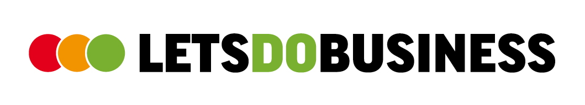
Strategy. Funding. Growth.
Every great investment starts with an idea. We help businesses turn theirs into reality — with strategic guidance, national and EU co-funding, and hands-on support.
Rooted in Greece. Building opportunity since 2004.
Years of experience
Businesses supported
Investments enabled
Start-ups guided
What we do
Technical assistance and strategic management.
From the first idea to a completed investment.
Business plans, funding applications, and hands-on implementation for enterprises across sectors — from wine and agri-food to commerce, IT, and energy.
We identify the right programme, build the application, and manage the project through to completion, with deep expertise in national and EU Structural Funds.
Strategic consulting for first-time entrepreneurs. More than 35 young founders guided from an idea to a running business, with support at every step.
Our work
From business investment to international cooperation.
Explore our clients, projects, and collaborations.
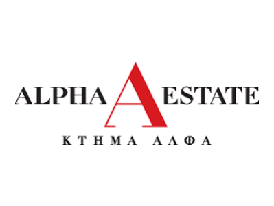
Multi-million Strategic Capital Investment & Infrastructure Execution
Directed the corporate Investments Department (2017–2024), orchestrating an extensive €82 million investment pipeline. Guided high-impact projects including the construction of a state-of-the-art sparkling winery, a 5-star hospitality facility, water processing infrastructure, and fine-dining gastronomy facilities via national and EU co-funding mechanisms.
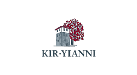
€9M Sparkling Wine Facility via the Just Transition Fund
Partnered in structuring and executing a flagship €9 million investment project for the establishment of a state-of-the-art sparkling wine production facility. Navigated the strategic planning and funding integration under the EU NSRF Just Transition Program, turning visionary winemaking infrastructure into a high-capacity reality.
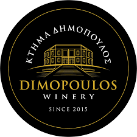
€350K+ Modernization for Premium PDO Amyndeon Winemaking
Advised and managed strategic capital modernization projects exceeding €350,000 over the past three years. Focused on upgrading processing infrastructure, enhancing facility technology, and optimizing the production of premium PDO Amyndeon quality wines for domestic and global markets.
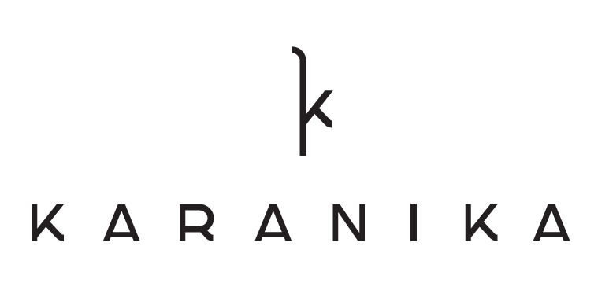
€300K+ Multi-Fund Capital Modernization via Just Transition & LEADER/CLLD
Advised and structured strategic investment projects exceeding €300,000, successfully leveraging diverse financing instruments including the Just Transition Program and LEADER/CLLD. Focused on advancing specialized production equipment and refining infrastructure to reinforce the estate's standing as a benchmark producer of premium sparkling wines.
Executive Direction & Comprehensive Institutional Transformation
Serving as the inaugural Executive Director of the University, bridging private-sector corporate governance with public higher education administration. Leading the institution’s operational optimization, digital transformation roadmap, administrative restructuring, and regional extroversion initiatives.
Bankable Business Plans & Feasibility Studies for 7 BESS Stations
Partnered in delivering the end-to-end technical feasibility studies, bankable viability assessments, and business plans for the deployment of 7 Battery Energy Storage Systems (BESS). Structured the commercial and financial models to ensure regulatory compliance, optimize capital readiness, and accelerate the transition toward scalable energy storage infrastructure.
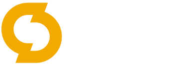
NSRF-Funded Headquarters Renovation & Digital Transformation
Advised and managed the investment planning and execution under the NSRF (ΕΣΠΑ) co-funded program for the complete modernization of the company’s corporate headquarters in Florina. Delivered end-to-end support focusing on facility renovation, smart workplace integration, and digital transformation to enhance overall operational agility.
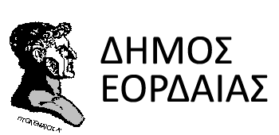
Municipal Infrastructure Master Planning & Project Governance
Headed the Municipal Planning Department, supervising and administering 12 strategic infrastructure projects with a collective budget exceeding €40 million. Orchestrated municipal development initiatives, international city partnerships, and EU-funded local interventions.
Regional Innovation Strategies (RIS3) & SME Technical Assistance
Long-standing collaboration encompassing the Regional Development Agency (ANKO) and the RIS3 Smart Specialization Expert Team. Supported over 320 regional SMEs with tailored modernization plans and managed multiple territorial Interreg cross-border initiatives.
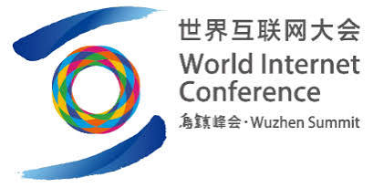
Global Forum Representation & Expert Evaluator on Cultural Heritage Digitalization
Represented the University of Western Macedonia as Executive Director at the 2025 WIC Forum on "Digital Protection and Inheritance of Cultural Heritage." Further recognized at an international level by serving as an expert reviewer in the final evaluation of proposals for the 2026 World Internet Conference Cultural Heritage Digitalization Case Collection, bridging high-level academic leadership with global digital heritage innovation.
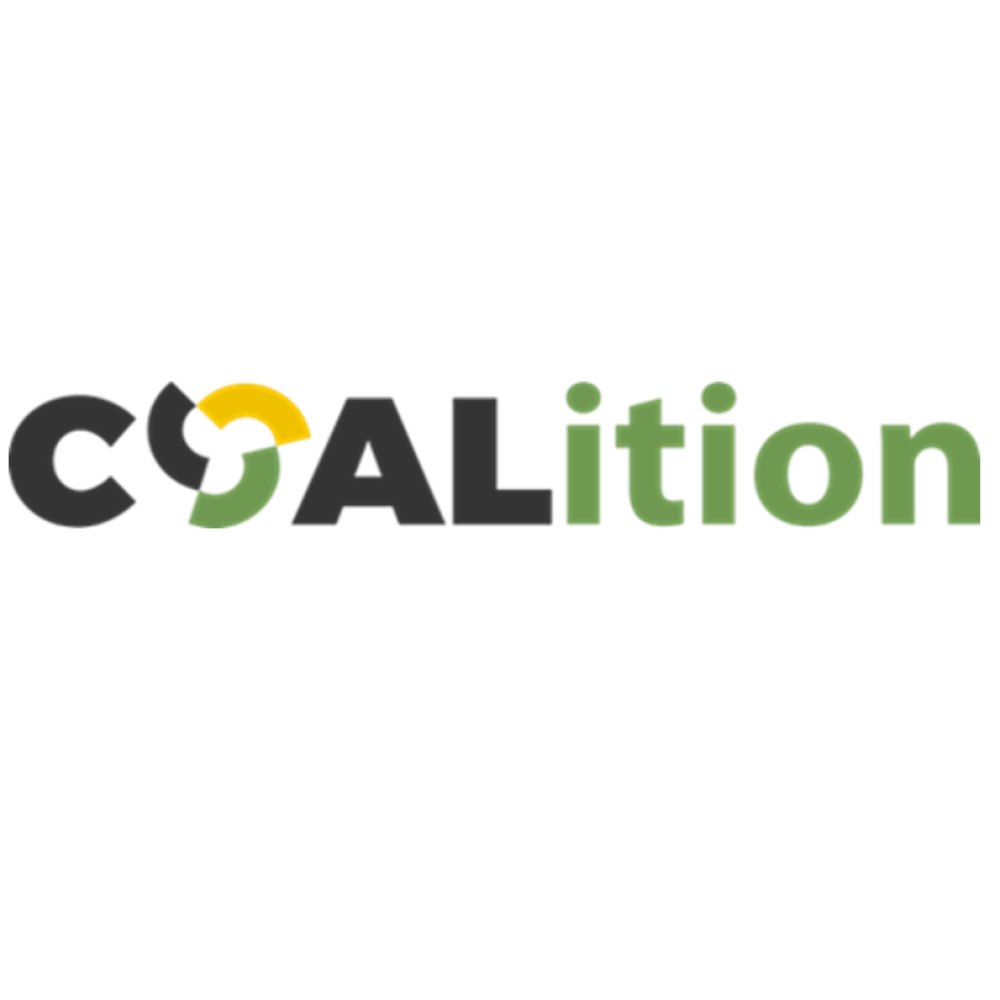
Horizon Europe Excellence Hubs for Coal Phase-Out Regions
Active partner in the €4.8M HORIZON-WIDERA initiative "COALition," uniting 15 international partners. Driving innovation excellence to transition legacy coal regions into climate-neutral, thriving, and competitive economies.
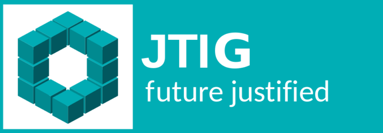
Multi-Stakeholder Transition Ecosystems & Quadruple-Helix Action
Co-founded the non-profit scientific initiative to champion fair developmental transformation during the post-lignite transition. Co-developed the Just Transition Living Lab (JTLL) in partnership with academia, policy makers, and local enterprises.
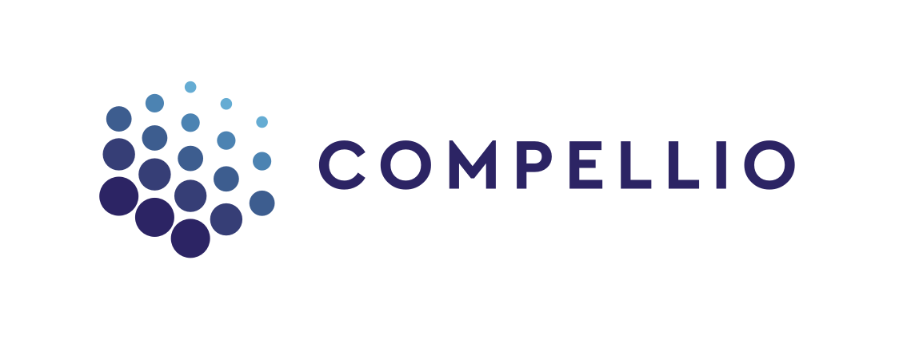
Blockchain-Driven Proof of Concept for European Auditing
Successfully co-developed and executed a pioneer Proof of Concept (PoC) for the European Court of Auditors alongside Luxembourg-based Compellio S.A. Demonstrated the deployment of distributed ledger technology for tamper-proof project deliverables and multi-level audit compliance.
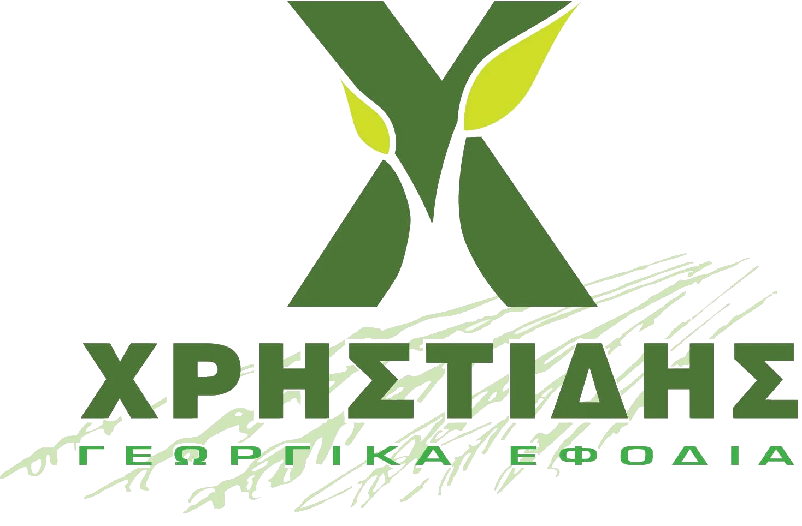
€450K Green Transformation & State-of-the-Art Facility Modernization
Advised and managed the successful structuring and execution of a €450,000 capital investment project under the NSRF "Green Transformation of SMEs" framework. Guided the business from proposal design to implementation, securing funding for new facility construction and advanced machinery to modernize operational workflows and enhance environmental sustainability.
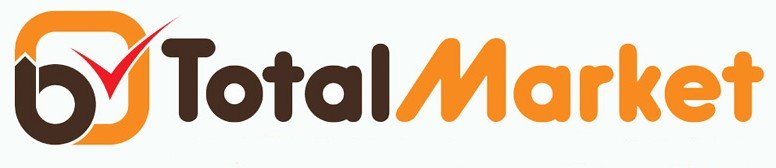
€200K Green Productive Investment for Modern Supermarket Facility
Successfully structured and managed a €200,000 co-funded investment plan under the NSRF "Green Productive Investment of SMEs" program. Facilitated the establishment of a state-of-the-art retail supermarket facility in Ptolemaida, incorporating energy-efficient infrastructure and modern commercial layouts to elevate customer experience and operational sustainability.
€1M State-of-the-Art Sparkling Wine Line via Just Transition Fund
Successfully structured and managed a €1 million strategic investment project in Amyndeon under the EU NSRF Just Transition Program (ΕΣΠΑ). Guided the planning and funding deployment for the creation of a cutting-edge, high-technology sparkling wine production line, expanding premium winemaking capacity and accelerating regional agro-industrial growth.
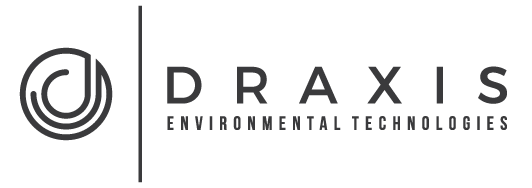
€280K Green Transformation for Environmental Informatics Operations
Successfully structured and managed a €280,000 investment project under the NSRF "Green Transformation of SMEs" framework for the establishment of modern office facilities dedicated to environmental informatics services. The project encompassed the installation of renewable energy sources (RES), the acquisition of electric vehicles (EVs), the creation of high-standard workspace environments, the production of promotional and branding material, and the creation of sustainable new jobs.
€100K Corporate Headquarters Modernization via Just Transition (70% Co-funding)
Advised and managed a €100,000 capital modernization project for the comprehensive upgrade of the company's corporate headquarters, implemented under the EU NSRF Just Transition Program with a 70% co-funding grant. Structured and executed the investment plan to secure high-tier workspace upgrades, modernized operational infrastructure, and enhanced energy and workplace efficiencies.
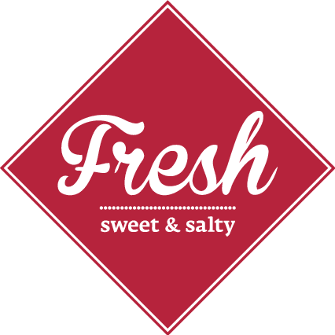
Equipment Modernization & Carbon Footprint Reduction
Advised and managed a targeted capital modernization project, focused on upgrading key operational equipment with modern, energy-efficient technology. The investment prioritized low-energy consumption systems, significantly curbing the enterprise's carbon footprint, lowering operational energy costs, and advancing environmental sustainability across its production processes.
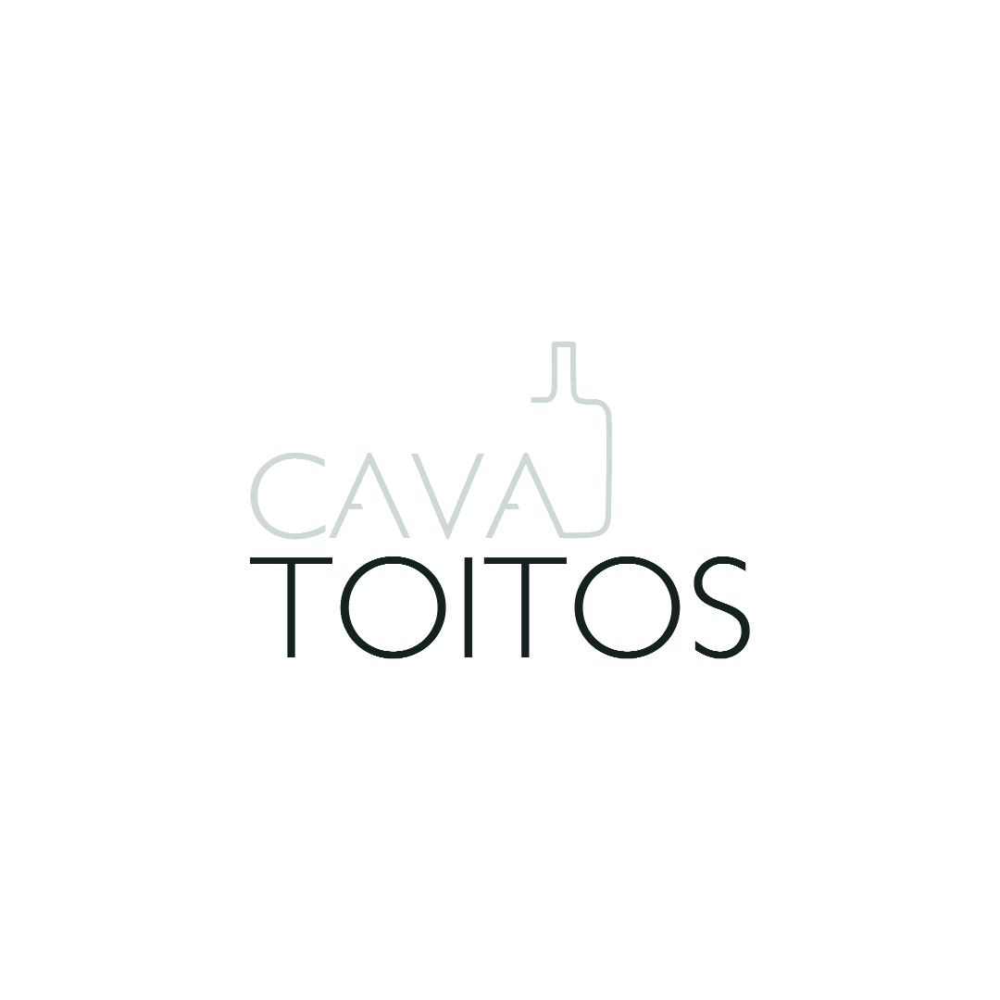
Beverage Retail Logistics & Commercial Modernization
Crafted customized business plans and modernization proposals under co-funded programs, streamlining retail infrastructure, storage capacity, and customer experience.
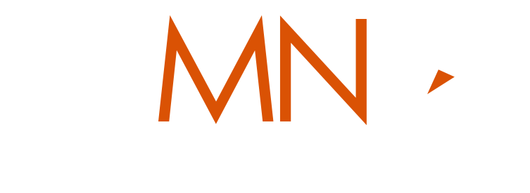
Green Transformation & Infrastructure Modernization for Digital Solutions
Advised and managed a strategic investment project under the NSRF "Green Transformation of SMEs" framework for an established provider of IT services, network infrastructure, and digital transformation solutions. Structured the funding and execution plan for the modernization of corporate building premises and the acquisition of cutting-edge equipment, optimizing internal operational workflows and scaling service delivery capabilities.
Accredited Business Advisory for SME Competitiveness
Registered Adviser at EBRD since 2021, providing institutional-grade strategic consulting, investment readiness, and performance acceleration for growing enterprises aiming to scale sustainably.
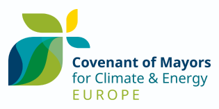
Sustainable Energy Action & European Climate Commitments
Coordinated and led the official municipal accession and signatory representation at the European Parliament (Brussels). Orchestrated local sustainable energy action planning aligned with EU climate targets.
Clients & collaborations
Explore the organisations and projects behind our work.
About us
When great ideas come to a standstill, we give them the green light.
LetsDoBusiness.
@LDB, we understand that in today’s complex economic landscape, visionary business ideas and vital investments often get caught at a “red light” — stalled by regulatory hurdles, funding gaps, or execution uncertainty.
Our mission is clear: to clear the path, accelerate your momentum, and turn your business vision into tangible, high-impact results.
Founded on more than 22 years of hands-on business consulting excellence, LetsDoBusiness serves as a trusted strategic partner for small and medium-sized enterprises (SMEs) and forward-thinking organizations.
With a proven track record of securing and deploying multi-million-euro co-funded investments across diverse sectors, we combine deep financial expertise, meticulous strategic planning, and practical operational execution.
Guided by integrity, deep industry knowledge, and an unwavering commitment to results, we don’t just offer advice — we unlock stalled potential and guide your enterprise safely through every phase of growth.
Whether you have a concrete project in mind or just want to explore an idea — we usually reply within one business day.